BAM Investigations
BAM, Builders of the Ancient Mysteries — the traces of an Ancient Civilization?
Patrice Pouillard · 139 min · watch on YouTube · summarised 2026-08-25
A French documentary, filmed over several years, that does something most of this material does not: it brings instruments and specialists to the sites rather than arguing from photographs. A roughness meter is run over blocks at Puma Punku and inside the Barabar caves. A 3D laser scanner and a sound level meter are taken back to Barabar on a second trip. A geologist, a career stonecutter and a watchmaker are asked what they see.
The film is in two distinct halves and they are not of equal strength. The first hour is site work — what was measured, what a stonecutter says about working granite in an unventilated cave, where repairs sit relative to what they repair. The second hour is a numerical argument about the metre, Pi, the Golden Ratio and a great circle drawn around the Earth. The narration treats both as the same kind of evidence. A reader need not.
The stated method is set out at the start: "We did a lot of reading before investigating on-site. Many far-fetched, contradictory, confusing things which could easily convince those who know nothing about the subject that nothing interesting is to be found in the ruins of our ancient people." The response is to bring in Érik Gonthier, credited on screen as "pre-historian, geologist at the Musée de l'Homme, ethno-mineralogist and semiologist", and to film his reactions as the trip goes on. It is worth saying at the outset that Gonthier does not agree with where the film ends up, and the film keeps his disagreement in. He is also the person holding most of the instruments: the roughness tester at Puma Punku, in the Serapeum and at Barabar, and the sound level meter on the second Indian trip.
Rapa Nui, and the shape of the whole argument
The film opens on Easter Island and uses it to establish the pattern it will look for everywhere else 5:22–13:44.
The conventional account is stated: roughly a thousand moai carved from the Rano Raraku crater over about a century, some capped with pukao of red scoria quarried at Puna Pau, twelve kilometres away over steep ground and hoisted onto heads up to eight metres from the ground. The film photographs the site's own information panel explaining how this was done and observes that it does not explain it. On the collapse narrative it sides with recent work rather than the popular version, citing the anthropologist Carl Lipo on the obsidian blades long read as weapons — they lack a pointed tip, and there are no fortifications on the island. What reduced the population to about a hundred and ten people was epidemic disease, slave raids and evangelisation, not internal war.
Then the actual argument. Ahu Vinapu is, by the archaeology, the oldest platform on the island, and it is built of large, precisely fitted stone in a way no later ahu on Rapa Nui is. Every later platform is smaller, less precise, and has collapsed. Vinapu has not.
"Amongst the builders at Rapa Nui who followed, none of them noticed that the only viable technique was the one utilized at Ahu Vinapu? And if they did, why not reproduce this technique?"
The conclusion offered is a fork: either Vinapu is a one-off whose secret was lost, or the Rapa Nui had nothing to do with building it. This is the out-of-sequence observation in its cleanest form, and it does not depend on anything else in the film.

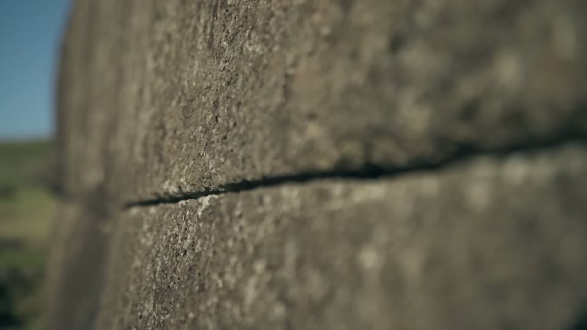
The oldest platform on the island is the best built, and nothing later matches it.
Peru: which layer is on top
The film moves to Cusco through the standard observation that the Spanish built Santo Domingo directly over the Coricancha, and notes this is not unique to the Catholic Church — a mosque over the Luxor temple, the Roman temple of Jupiter over the earlier foundations at Baalbek where, it says, each block weighs over a thousand tons 14:37–15:01.
At Caral, dated to around 5,000 years ago and described as contemporary with Giza, the argument is about what is absent: no fortifications and no weapons, which the film reads as a city that lived without war for over a thousand years 16:26–17:23.
The core Peruvian observation is repeated at Machu Picchu, Sacsayhuamán and Ollantaytambo and is stated as a question about stratigraphy rather than style 19:39–23:53:
"As the repairs are to be found on the upper layers of the walls it means the stones underneath are older."
At each site there are two qualities of work — very large blocks fitted without mortar, and small, roughly coursed stone — and at each site the small work sits on top of the large. The film argues this cannot be read as progress. It also points to a detail visible where earthquakes have separated blocks: the hidden internal faces are fitted as precisely as the visible ones, and where one face is slightly twisted its neighbour mirrors the twist. Work that cannot be seen and serves no visible function.
At Sacsayhuamán the film measures the argument against the site's own guiding: the puma-head story, the three enclosures over 400 m, corner stones it puts at over 200 tons. On the fortress reading it notes the site has numerous military weak points.

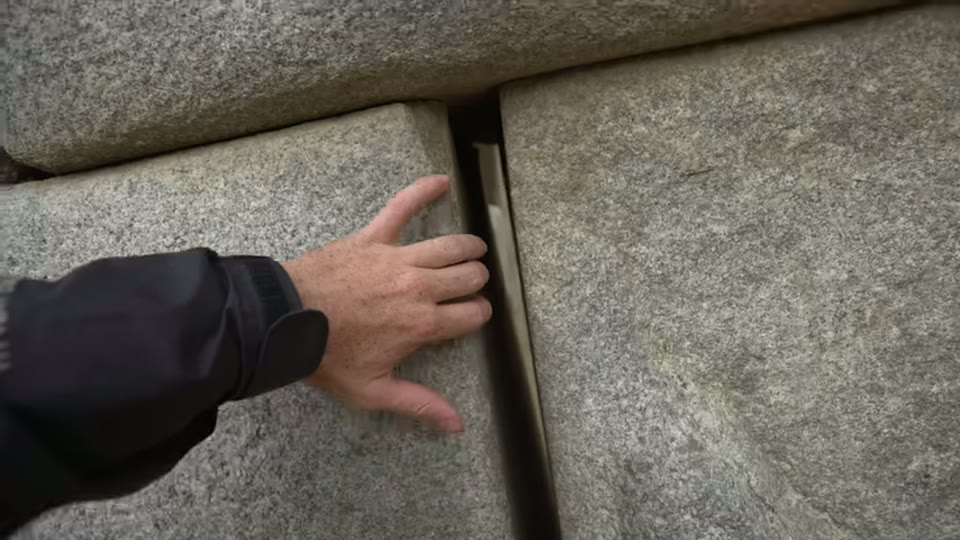
Where the two qualities of work meet, the small stone is on top.
Some of this ground is covered from the other direction by Curious Being's Sacsayhuamán entry and her survey of megalithic knobs, which reach different conclusions about how polygonal walls were fitted.
Tiahuanaco: the site is a reconstruction
The strongest single check in the film, and the cheapest to verify, is at Tiahuanaco 24:30–25:12. The enclosure, pillars and gateway that visitors photograph are shown to be a reconstruction made on an archaeologist's interpretation, and cites the site as it stood before restoration in 1892.
What appears on screen at that moment is worth being exact about. Over the line "here is the site, pictured before its restoration in 1892" the film shows the title page of a book — Alphons Stübel and Max Uhle's Tiahuanaco im Hochlande des alten Perú, with the film's own caption chip reading "DIE RUINENSTAETTE VON TIAHUANACO — STÜBEL & UHLE, 1892". That is a real and findable source, properly credited, and it makes the claim checkable. It is not itself a photograph of the ruins.
"At the site, no one tells you anything. There's not even a sign telling you when it was actually restored. You could believe this was an authentic site."
The complaint is about the absence of signage, not about restoration itself.

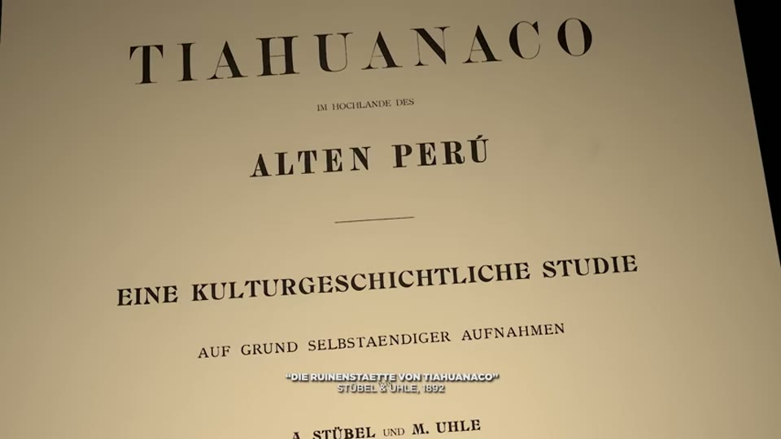
What visitors photograph at Tiahuanaco is a reconstruction, and the source for what was there before is a book.
Puma Punku, measured
A kilometre away at Puma Punku the film does the thing it exists to do. Gonthier is asked how the surfaces were made and answers immediately and without hedging: small flat, slightly abrasive stone shards, worked back and forth, over an enormous amount of time. He describes Indian stonecutters still using essentially the method, and copper lamellae worked over and over. He returns to the point repeatedly 26:29–27:10:
"Do not underestimate human capabilities. […] No, this was hand-made."
The film records his reason for insisting: "as soon as you question the academic version, others will assume that you believe it was built by aliens." Both Gonthier and the narration reject that reading explicitly.
The next day Gonthier runs a roughness-measuring device over the andesite 27:29–28:40. Randomly chosen blocks give one range of numbers; a block that looked unusually smooth gives a much flatter trace. The two figures spoken aloud are 76.516 and 31.653, and the narration converts: a micron is a thousandth of a millimetre, so about 0.03 mm between the highest and lowest points of that surface, which it describes as ten times smoother than modern flat concrete.
The instrument is identifiable in frame — a Mitutoyo portable surface roughness tester, its maker's name legible on the casing. More usefully, in a later shot inside the Serapeum its screen is readable, and it carries the settings the narration never mentions: ISO 1997 and a cut-off of λc 2.5 mm at 0.5 mm/s. The measurement is better specified on the screen than in the commentary.
Christopher Dunn is brought in for a comparison he made independently: a glass hotel table top measured within seven thousandths of an inch of flat, and a Puma Punku surface within half a thousandth.
The film also notes the black basalt at the site is said to come from 300 km away, and that this did not appear to surprise Gonthier much.
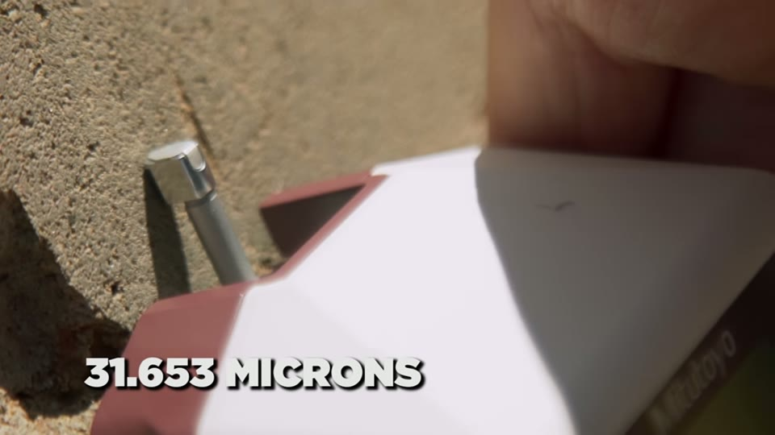
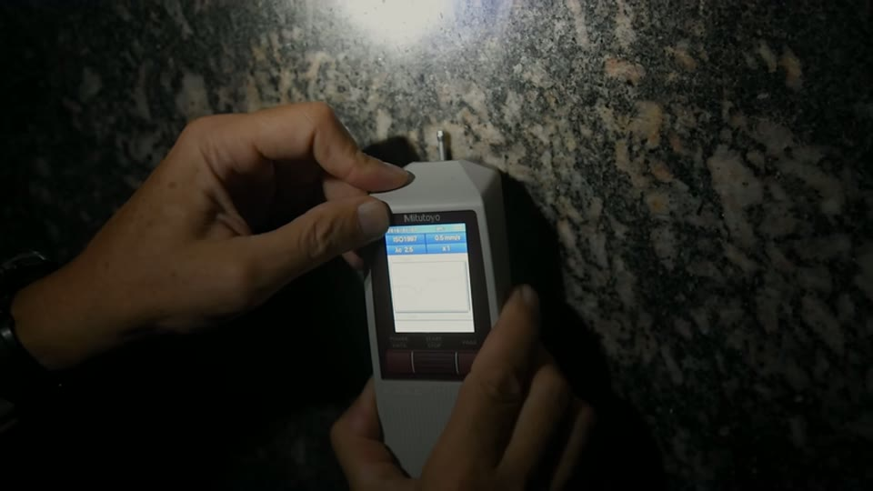
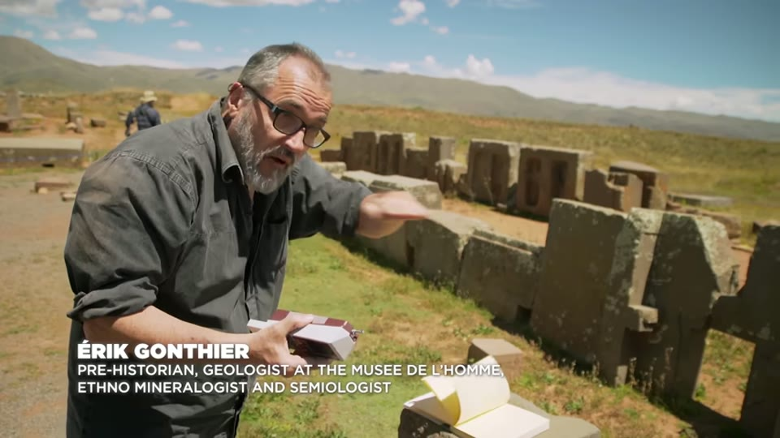
The surfaces were measured with an instrument, and the instrument's settings are on screen even though they are never spoken.
Nazca, and an unnamed cave
Nazca is handled briefly and mostly to dismiss the popular reading — "How could you seriously consider that people capable of flying across the universe might need a landing strip drawn on the ground?" The observation the film keeps is that the animal figures and the long abstract lines overlap in places, which it reads as two eras and two styles rather than one 30:14–32:24.
A site reached after thirty kilometres of dirt track is filmed but not named — a low wall and what looks like a sheepfold, with a cave entrance whose stones are entirely sculpted, and outer structures in the sheepfold's cruder style 32:24–34:08. The site is not identified on screen and the name has not been established.
Barabar, first visit
The film's centre of gravity is the rock-cut caves at Barabar and Nagarjuni in Bihar — seven caves cut into granite, two of them unfinished, conventionally dated to about 2,300 years ago by inscriptions of Ashoka at the entrances of three 34:52–43:23.
The interior surfaces are polished to the point that they read as cement on camera. The film is careful here in a way worth noting: it says the footage was shot with a highly sensitive camera that films in near-darkness as if in full light, and it shows what a normal camera captures instead.
Jean-Louis Boistel, a stonecutter of more than forty years working granite without modern tools, is shown the footage and gives the film its most concrete objection, which is not about tools at all but about working conditions 36:18–37:22:
- torches would consume the air and make the space unbreathable, and yet the work needs light
- granite worked with picks produces silica dust in quantity — "it produces a lot of dust silica that leads to silicosis" — and outside, in the open, it already covers the workers
- so: how was a sealed granite chamber ventilated well enough to work in for the thousands of hours the polish implies?
Boistel's verdict on the surface itself is quoted twice, and the film keeps the correction he makes to himself: "It's absolutely incredible, it seems to be laser-made. I mean, no, it's not laser-made… this is hand-made."
The dating argument is made by comparison of workmanship rather than by any independent date. The Ashoka inscriptions at the entrances are, the film argues, markedly cruder than the interiors they are cut beside, and in one cave the granite around them has become flaky where the inside has not 38:22–39:05.
The two unfinished caves are used the same way. One has a carved porch in Buddhist style — the only porch at the site — and an unfinished interior: walls polished, ceiling and floor still raw. The reading of the porch is unflattering — and it is Gonthier's, not Boistel's: his credit caption reappears on the cut at 39:44, with his hand on the carving. "You stand slightly to the side, you can see the holes, and then the deformation here. There are no sharp edges… this is second class work." The film's hypothesis is that the porch and the failed interior are a later attempt on a cave found already part-cut, and it labels this speculation: "Of course, this is pure speculation." Cuts on the ceiling go too deep to be recoverable, and a splinter has broken out leaving a hole the film calls irredeemable.
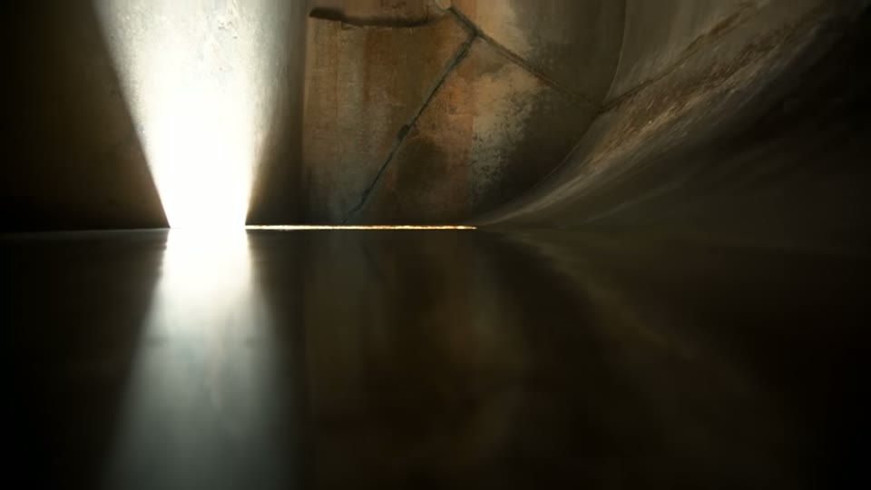
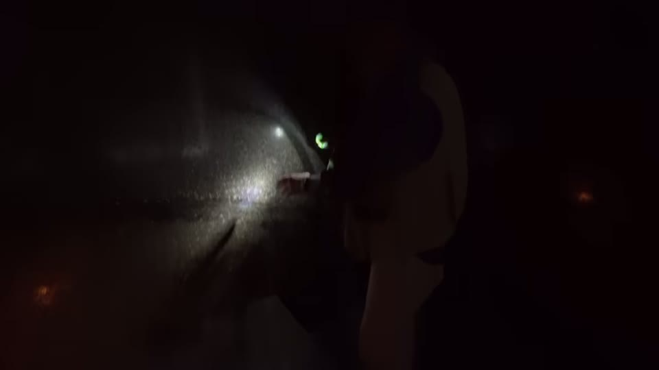
The interior finish, and what the camera is doing to it.

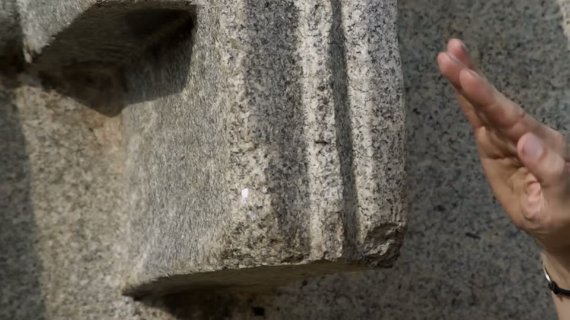
The carved porch is worse work than the chamber behind it.
Curious Being reaches the opposite conclusion about these caves from the same physical evidence in her Barabar investigation, reading the laser metrology, the acoustic work and the archaeology and finding for ropes and chisels. The two accounts should be read together.
The Serapeum, ranked
At the Serapeum of Saqqara the film makes an observation that is unusual for this material because it is a downward comparison 44:34–45:38. The twenty-two granite boxes come from Aswan, some 900 km away. The polish is described as amazing — and then:
"However, despite it being extraordinary work, surfaces are a little less precise than the ones observed at Barabar. On the other hand, unlike at Barabar, we do not get this perfect flatness of the cave."
The questions raised are logistical rather than metrological: how twenty-two boxes and their lids were moved into a confined underground space, how it was lit well enough to polish, how the workers breathed — the Boistel objection again, in a different country.

The boxes, and the space they are in.
Giza
The Valley Temple is presented for scale: blocks between 200 and 400 tons, of varying shapes fitted together, with no explanation the film has found in the literature 47:52–48:48.
On the Great Pyramid the film runs through what it takes to be undisputed and where the record stops 49:08–57:31:
- no text describes its construction. The 2013 papyrus fragments from the end of the 4th dynasty do record transport of Tura limestone for the casing, and nothing beyond that
- the bedrock hill was not removed; part of it was kept as a core, and roughly 60,000 m² was paved around it with blocks of complex, non-identical shapes set into ground cut to receive them
- Mark Lehner's figure for the base is cited: a few centimetres of level across 230 m
- orientation to true north within about five hundredths of a degree
- the base is slightly octagonal — an indentation in each face, visible in aerial and satellite imagery, present also on the small pyramid but not the middle one
- the entrance was invisible when the casing was intact, which the film argues from Al-Ma'mun's 9th-century tunnel: it was dug a few metres below the real entrance and still struck the junction of the ascending and descending passages
The indentation carries an argument the film revives from André Pochan, a mathematician teaching in Cairo in the 1930s, who called it the "lightning phenomenon": at the equinox the sun catches the ridge and lights half the south face for a few seconds before the whole. Pochan photographed it on 21 March 1934 with infrared film, three frames fifteen seconds apart, and the film shows them alongside a Royal Air Force aerial photograph. Against the objection that the casing had no indentation, the film argues the surviving casing blocks on the north face are not original — showing a Morton Brothers photograph in which they are in far better condition than the blocks behind them, and the same blocks a century later, eroded.

The scale of the Valley Temple's outer wall.

The evidence offered for the indented faces.
On the internal structure the film records the descending passage at 26° 18′, the same gradient as the ascending, the Grand Gallery's 8.5 m height over 50 m, and the King's Chamber as the only granite in the building — slabs of 12 to 70 tons from Aswan raised some 90 m in total, with a sarcophagus too large to have passed through the entry passage and therefore placed before the walls went up.
For dating and the pyramid-construction accounts these run alongside the radiocarbon entry and the luminescence result.
The pivot: the metre at Puma Punku
At 58:22 the film changes kind. The H-blocks at Puma Punku are measured with a handheld laser distance meter — visible in frame, a consumer tool — and the numbers come back round 58:22–1:01:37: a gap of 22 cm, then 21.9, then 21.9; a cross pattern 30 cm across; a block one metre high. The reaction is Gonthier's:
"Exactly one meter! I am not making any mathematical calculations. I am just observing the averages of these measurements."
He also states the objection to his own reading, on camera, a few seconds earlier: "Scientifically, I would need a number of measurements to be sure we are more or less right."
The argument built on it is that the metre is defined from the size of the Earth and was fixed in 1795, so its appearance in a pre-Inca site implies either coincidence, that the builders had measured the Earth, or that the knowledge was transmitted. The film states its own sample: three H-blocks were measured, the others being too damaged or unreachable.
Stübel and Uhle return here, and this is the better evidence. The film shows a plate of their measured isometric drawings of the H-blocks, every edge dimensioned in metric decimals. That is a published nineteenth-century survey anyone can consult. The figures legible on the plate in this frame are decimal but not round — 0.185, 0.36, 0.89, 1.01 — which the narration does not remark on.
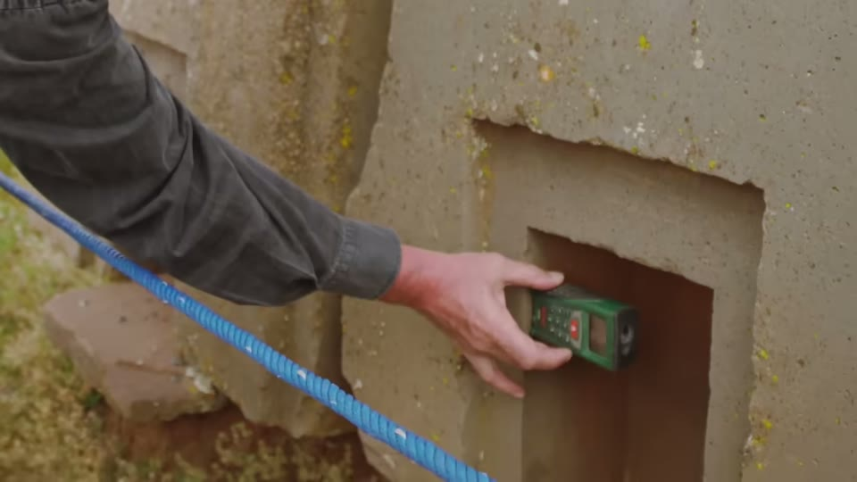

What the metric claim was measured with, and where the 1892 figures come from.
From there the argument extends 1:01:57–1:13:17. The royal cubit derived from the King's Chamber is given as 0.5235–0.5236 m; a circle of diameter 1 has circumference Pi and each sixth of it is 0.5236, with 2.618 — the Golden Ratio squared — left over, so cubit, Pi and Golden Ratio are tied together by one construction. John Taylor's 1859 observation that the pyramid's base divided by its height gives Pi is cited, as is the King's Chamber being a double square. Then the metre is brought back in: the same dimensions expressed in metres give Pi under division and Pi × 100 under subtraction, which the film says works in no other unit.
Quentin Leplat is interviewed on medieval French buildings, reporting doorway widths of exactly one metre or 90 cm in 12th-century monuments and at Chambord, and a fresco at Saint-Nectaire one metre wide above a stone one cubit wide. The film raises the obvious objection itself — that medieval builders were thinking in spans, and five spans happen to make a metre — and then argues that the coincidence has to be paid for somewhere.
The film's own summary of the position is fair to state in full, because it is the point at which it stops presenting measurement and starts presenting inference:
"You can check this for yourself and believe what you want but be careful because what we believe, influences what we see."
Antikythera
The mechanism is the film's strongest supporting case and the only object in it whose sophistication is not in dispute 1:14:19–1:23:22. The account is conventional: recovered from the wreck off Antikythera, dated to around 60 BC, its gearing invisible until Derek de Solla Price worked with a nuclear physicist in Athens to X-ray the fragments in the 1970s. The Metonic numbers 19, 235 and 76 appear in the inscriptions on the machine itself. Mathias Buttet, who led Hublot's reconstruction, describes his own starting position:
"In 250 BCE, we were capable of doing this […] And then, right away I said it was not possible. And what's next, there were aliens too… I thought it was a huge joke, then I got angry. So I went there, saying I needed to learn a bit more about it. Then it was obvious, it was possible, it existed, it was there in front of me."
The use the film makes of it is an argument about survival, not about Greece: the object exists only because it sank. Metal on land was recycled. "If you needed proof that tools or machines did not survive the test of time, this was only 2,000 years ago. Egypt is 5,000 years ago."
That is a direct answer to the standard objection, which Curious Being puts at its sharpest in If It Existed, Where Are the Machines? — and the two should be set against each other, because she argues the absence of tooling, wear debris and production waste is not explained by recycling.
Worth knowing what the screen carries here: the fragments themselves are shown, corroded in their museum case with a toothed wheel legible through the crust — and then, under the line about thirty gearwheels being visible on the X-ray, the film cuts to a computer-generated model of the dials and their Greek inscriptions. The X-ray output itself does not appear in the frames examined.

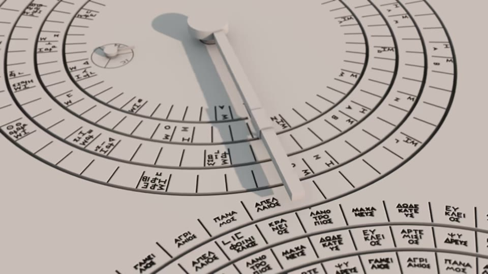
The mechanism as object, and the mechanism as reconstruction.
Göbekli Tepe, and the cataclysm
Graham Hancock is interviewed at length 1:23:42–1:37:22. The site facts given are standard — excavated by Klaus Schmidt from 1995, T-shaped pillars around 2.5 m and up to 16–20 tons, deliberately buried, dated to about 11,600 years ago with roughly 150 years of error. Hancock's reading is transfer of technology: megalithic building and agriculture appearing together with no local precedent, which he attributes to incomers who already had both.
The film adds the cross-continental motifs Hancock argues for: the pillar figures' hands meeting in front of the belly, which he calls identical to the moai; an H sign on a belt against the H-blocks at Tiahuanaco; and handbag shapes on a pillar, set beside the Mesopotamian Oannes and Central American parallels. Curious Being takes those same handbags apart in the handbag symbol and the Göbekli Tepe reading, and her account of the excavation is here.
The burial date is then tied to the end of the Younger Dryas, and the impact hypothesis is summarised through platinum, nanodiamonds, carbon spherules, melt at 2,000° and ash in the boundary layer. Plato's date for Atlantis — 9,000 years before Solon's visit around 600 BC — is noted as landing on the same figure. Hancock's own emphasis is on sea level: 120 m of rise, some 27 million km² of land lost, and the coasts being where people live. He describes diving with local fishermen at Mahabalipuram in 2002 and finding structure, exposed again when the sea withdrew during the 2004 tsunami, and complains that survey has stayed in the intertidal zone rather than going five kilometres out to 30 m depth.
Curious Being tests the impact hypothesis directly, and rejects it as the cause of a civilisation's collapse, in the Younger Dryas entry.
The Göbekli Tepe section mixes real excavation footage with animated reconstruction, and the animation runs under the load-bearing part: Hancock's account of the pillars' carved arms and hands, the H sign and the handbag motifs plays over a rendered enclosure with a fire burning in it. The motifs he is describing are on the real pillars; the enclosure the viewer is looking at while he describes them is a drawing.
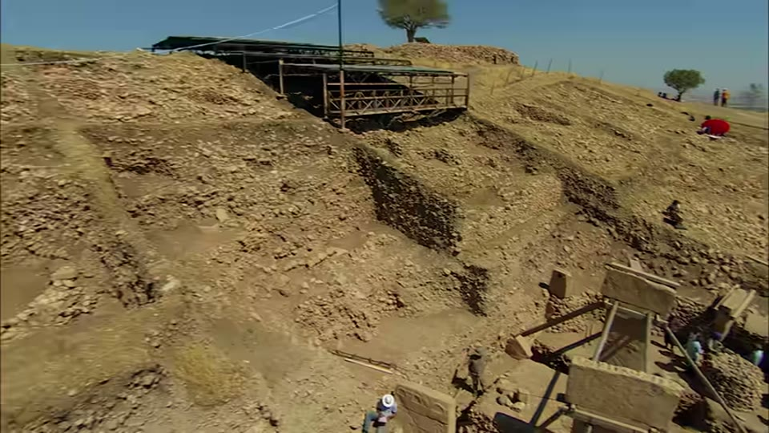
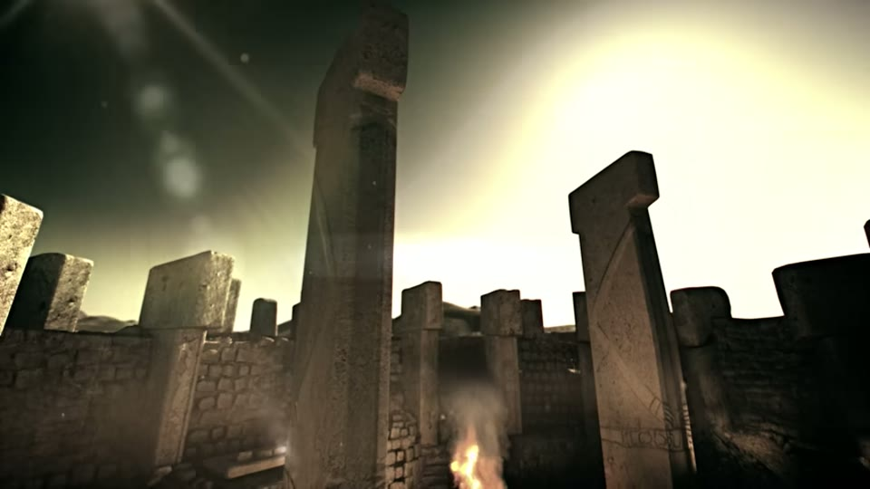
Göbekli Tepe as excavated, and Göbekli Tepe as imagined.
The great circle
The film's largest claim is geometric 1:38:46–1:48:48. Following Francis Mazière's 1965 "magnetic equator" and Jim Alison's 1997 "great circle", a band roughly 100 km wide is drawn from Rapa Nui at 30°, passing Nazca, Machu Picchu, Ollantaytambo, Sacsayhuamán, Cusco, Naupa Iglesia, Tassili n'Ajjer, Siwa, Giza, Petra, Ur, Persepolis, Mohenjo-daro, Khajuraho, Pyay, Sukhothai, Angkor Wat and Preah Vihear. The film is explicit that the sites are not contemporaneous and that it is arguing about locations, most of them rebuilt over earlier ruins.
Ratios are then drawn between sites — Angkor–Nazca against Mohenjo-daro–Rapa Nui, Golden Ratio steps between Angkor, Giza and Nazca — and the Rapa Nui–Giza distance is given as 16,180 km, or a quarter of the Earth's circumference times the Golden Ratio.
The film reports, against itself, that this figure moves: Google Earth gave 16,179 km until 2012 and 16,168 km now, because the calculation method changed. Its response is that the point at exactly 16,180 km falls inside a triangle formed by Terevaka, Poike and the Rano Kau crater.
The second layer is geological. An unnamed source — "a private geologist who is not seeking recognition" — is reported as finding that each site on the circle sits on a point of discontinuity in the crust, a line of weakness where an earthquake would break. The film's own reading is that polygonal masonry survives earthquakes better than coursed brick, so building on a fault is a design choice; it cites Iain Stewart of the University of Plymouth on Greek temples sited on seismic ground with clean water sources. (The name is given in the narration only and has been matched by inference.)
This is the point at which the map itself becomes the argument, and the film does not publish an inclusion rule for which sites are on the line and which are not.
Barabar, second visit
The film returns to Barabar with a rotating-beam 3D laser scanner, a laser level and a sound level meter, and shows the point clouds untouched 1:56:48–2:05:20. What comes out is a set of shapes described with numbers:
- five finished chambers of increasing geometric complexity — trapezoidal sections with half-cylinder ceilings, one fully curved, one a conical dome cut at one end
- the vertical walls are not vertical: tilted at a constant angle of under 3°
- precision of 2 to 8 mm over lengths exceeding 13 m, and near-vertical symmetry
- the ceiling axis heights differ per cave: about 13 cm above the floor in Vapiyaka, 1.20 m in Karan Chaupar, 1.13 m in Sudama — and in Gopika, about 47 cm below the floor
That last is the film's best technical point, and it is an argument about intent rather than tools: an arc whose axis lies beneath the floor is far harder to check for correct curvature during cutting. "Meaning you wouldn't choose to make a ceiling like this unless someone specifically asked you to."
The acoustic results are given as measured resonances: Karan Chaupar at 200 Hz and multiples — 400, 800, 1,000, 1,200; Gopika at 200, 400, 800 and 1,200; Vadathika at 200 and 1,000. Two caves are stated as having insufficient measurements. In Sudama the ground circle is measured at 6 m to the millimetre, with a hemispherical dome of about 3 m radius to within 5 cm.

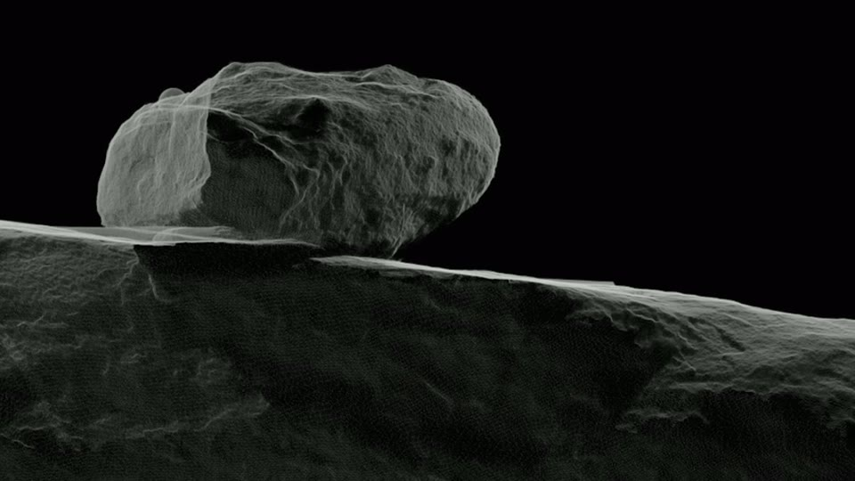
What the 3D survey produced.
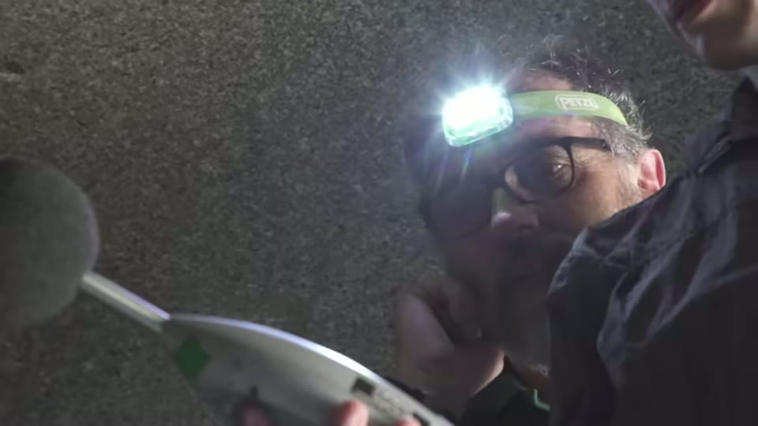
How the acoustic figures were taken.
What it concludes
The film lists its own findings before drawing the conclusion 2:06:04–2:07:49 — similar techniques worldwide, absent records, careful rock selection, unfinished elements, astronomical orientation, Göbekli Tepe's date, acoustic design, the Golden Ratio, the cubit–metre link, the great circle, and flood traditions — and then states the inference plainly: "instead of chance, we choose a more rational explanation. The existence of an advanced civilization in the forgotten past who would have disappeared following the cataclysms of the Younger Dryas."
The closing movement goes further, into the Book of Revelation's four beasts, the Marseille Tarot "World" card, the tetramorph, and a suggestion that the King's Chamber may be tuned to 432 Hz — which it flags as requiring analysis it has not done.
Its final argument is methodological, and it is aimed at the reader rather than at any site:
"It's the same thing with an archaeologist who does not believe in the existence of sophisticated mechanical tools of the past — does not see the point in measuring a surface with a roughness-measuring device or to scan in 3D. If they're already convinced that it is a by-product of basic tools, then why bother checking?"
What you can check yourself
- **Stübel and Uhle, Tiahuanaco im Hochlande des alten Perú (1892).** The film names and shows it twice — once for the state of the site before restoration, once for the measured drawings of the H-blocks. It is a published survey, so both the reconstruction claim and the metric dimensions can be taken back to the source rather than to the film. The absence of signage at the site can be checked by anyone who goes.
- Which layer is on top. At Ollantaytambo, Sacsayhuamán and Machu Picchu, whether the small coursed stone sits above or below the large fitted blocks is visible in almost any photograph. No instrument needed.
- Ahu Vinapu against the other ahu. Photographs of Vinapu and of the later platforms are freely available; the comparison the film rests on is one anybody can look at.
- Al-Ma'mun's tunnel. Its position relative to the original entrance is a matter of record and is the whole of the film's evidence that the casing hid the doorway.
- Pochan's 1934 photographs and the RAF aerial image. Both are published; so is the dispute about whether the casing was indented.
- The Morton Brothers photograph of the north-face casing blocks, against their condition today.
- The Antikythera inscriptions. 19, 235 and 76 are on the object and in the published X-ray and CT work.
- Göbekli Tepe's date and deliberate burial, both from the excavation record.
- The H-blocks. They can be measured, and the 1892 plate the film shows can be read independently. The film says it measured three.
- The great-circle distances. They can be checked in any mapping tool — and the film itself reports the Rapa Nui–Giza figure changing by 11 km between methods, which is a check it performed on its own claim and published.
What the video does not settle
Its own experts disagree with its conclusion, and it leaves that in. Érik Gonthier says the Puma Punku surfaces are hand-made and says so more than once. Jean-Louis Boistel corrects himself mid-sentence from "laser-made" to "hand-made". The film does not resolve this; it presents their measurements and then argues past their interpretation.
The roughness measurements are better specified on screen than in the narration, and still incomplete. The instrument is a Mitutoyo portable tester and its display shows ISO 1997 with a 2.5 mm cut-off — none of which is spoken. What is missing is which parameter the figures report: Ra, Rz and Rt are different quantities and 31.653 means different things under each, and the narration's gloss — "a variance between the highest and the lowest points" — does not match the parameter a tester of this kind displays by default. Sample size and how the blocks were chosen are not given, beyond "randomly selected" and then "as we start to choose the stones". There is also no control: no reading is taken from granite or andesite finished by hand with abrasive by a modern stonecutter, which is the comparison Gonthier's own account would require. The film puts up a list captioned smooth concrete, ceramic and glass — but in the frames examined the labels appear without their values.
The metre argument rests on three blocks, measured with a consumer laser rangefinder. The film says the sample size itself, which is to its credit, and Gonthier says on camera that more measurements would be needed. The instrument is visible in frame; no tolerance for it is given on screen, and the claim being made from it is a one-millimetre difference between blocks. Nor does the film address how many dimensions were available to measure across the site, and what proportion of them come out round — the test that would distinguish a standard from a selection. Its own strongest exhibit cuts both ways: the 1892 plate it displays carries dimensions of 1.01 and 0.185 alongside the round ones.
No null test is offered for the geometry. Pi and the Golden Ratio can be recovered from most sets of building dimensions if the choice of which dimensions to divide is free. The film does not show what a deliberately arbitrary building yields under the same treatment.
The great circle has no published inclusion rule. Which sites lie on it, and which nearby sites do not and why, is never stated. The 100 km band is asserted rather than derived. And the crustal-discontinuity claim comes from an anonymous source — "a private geologist who is not seeking recognition" — so it cannot be checked at all.
The acoustic results have no control room and no stated method. The instrument shown is a handheld sound level meter, which measures level; identifying a room's resonances also requires a source to excite it and an analysis of the response, and no sound source appears in the film and no procedure is described — only the resulting frequencies are read out. Beyond that, any chamber roughly 6 m across will have modes, and 200 Hz with its multiples is the kind of series a room of that size would be expected to produce. Without a measurement in a cave of similar dimensions not claimed to be tuned, the resonances do not separate design from geometry. The film says two of the five caves have insufficient data.
The 432 Hz suggestion for the King's Chamber is explicitly unfinished — the film says it requires more sophisticated equipment and further analysis.
Two of its supporting cases are carried partly by reconstruction. The Antikythera dials and the Göbekli Tepe enclosure are both shown as computer-generated renderings during the narration that does the argumentative work, alongside genuine footage of the fragment and the excavation. Neither is presented as a photograph, and neither is labelled as a reconstruction either.
No tool is demonstrated anywhere in the film. The Boistel objection about ventilation and silica dust is a real problem for the conventional account, but it is an argument that something is unexplained, not evidence for a particular alternative. No proposed method is tested on stone.
Barabar is not independently dated. The argument that the caves predate Ashoka is a comparison of workmanship — the inscriptions are cruder than the interiors — with no dating evidence offered. That the finish is better than the inscription does not establish that it is older.
The unnamed Peruvian cave site is filmed and argued from but never identified, so nothing about it can be followed up.
Several names could not be confirmed from the screen. Iain Stewart of Plymouth, and the French researchers "Laveau" and "Vermard" cited on Giza and Orion, were matched by inference from narration rather than read from an on-screen credit.
See also
- I Spent Months Investigating the Barabar Caves — the same caves, the same kind of instruments, the opposite conclusion
- If It Existed, Where Are the Machines? — the objection this film answers with the Antikythera survival argument
- Was an Advanced Civilization Wiped Out by a 12,800-Year-old Comet? — the Younger Dryas impact tested and rejected
- Göbekli Tepe: New Excavations · the handbag symbol · the Göbekli Tepe handbags and vulture
- How Were Sacsayhuamán Polygonal Walls Built? · Megalithic Knobs Worldwide
- Great Pyramids' Radiocarbon Dating · Questioning the Luminescence Dating Result
What we have not checked
- The Puma Punku roughness figures against any published metrology of the site.
- Whether the 1892 photograph shown is of Tiahuanaco and dated as stated.
- Pochan's 1934 infrared photographs against a printed source.
- The Barabar resonance frequencies against the acoustic report Curious Being reads in
OMWPyuxpm0I, which is the obvious comparison and has not been made. - Jim Alison's published great-circle work, and whether the film's ratio claims are his or new.
- The identity of the unnamed Peruvian cave site at 32:24–34:08.
- Iain Stewart's paper on Greek temple siting.
- Stübel and Uhle 1892 itself — neither the pre-restoration plates nor the H-block dimensions have been read against the publication.
- Whether the film credits Pouillard on screen; the end credits were not examined.